ActD Afficher les détails de la note
UMLActivity
Untitled
::
Note
::
Activity Diagram
::
ActD Afficher les détails de la note
Description
none
Diagrams

ActD Afficher les détails de la note
Groups
Utilisateur
Interface
BDD
Edges
(InitialNode1→Cliquez sur un note pour en afficher les détails)
(Cliquez sur un note pour en afficher les détails→Requête pour consulter les détails de la note)
(Requête pour consulter les détails de la note→Executer la requête)
(Executer la requête→Vérifier le retour BDD)
(Vérifier le retour BDD→DecisionNode1)
CATCH (DecisionNode1→Message SQL)
TRY (DecisionNode1→Afficher un formulaire prérempli avec les détails de la note)
(Message SQL→FlowFinalNode1)
(Afficher un formulaire prérempli avec les détails de la note→ActivityFinalNode1)
(Message SQL→FlowFinalNode1)
Properties
Name
Value
name
ActD Afficher les détails de la note
stereotype
null
visibility
public
isReentrant
true
isReadOnly
false
isSingleExecution
false
Owned Elements
ActD Afficher les détails de la note